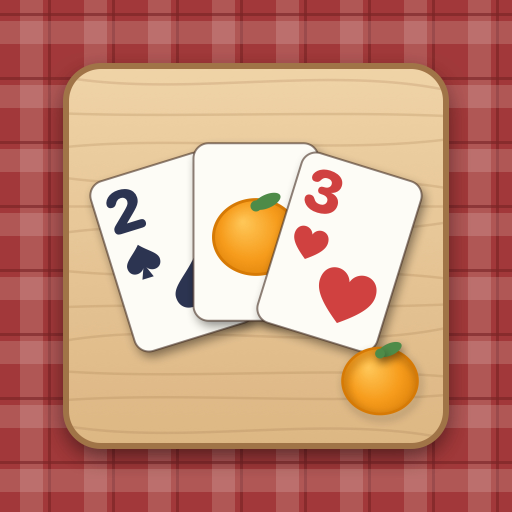

数え札の大富豪
出た札が表で見える・うちのルールをしまえる
コンピュータ3人と遊ぶ、トランプの「大富豪（大貧民）」です。場に出た札をアプリが数えて、表で見せます。家や仲間ごとのルールは、名前を付けてしまっておけます。
- 数え札：場に出た札を、数字とマークの表でいつでも見られます。「2はあと1枚」「ジョーカーはもう出た」が分かります
- 卓の上には、ジョーカーと強い数字が「あと何枚」ほかの人の手にあるかが、いつも出ています
- 手札の「強」の印：いま1枚で出して、だれにも負けない札に付きます
- うちのルール：革命・8切り・階段・マークしばり・11バック・スペ3返し・5飛び・7渡し・10捨て・都落ち・反則上がり・札の交換を1つずつ入・切し、組み合わせに名前を付けて、何組でもしまえます
- 相手の強さは、やさしい・ふつう・つよい。相手は、あなたの手札を見ません。配りは、どの強さでも、ただまぜるだけです
- 1勝負は3回・5回・10回。途中でやめても、つづきから遊べます
- パスのボタンは、手札から離してあります
- 札の絵は、このアプリのために描きました。ジョーカーは、みかんの札です
- 登録・課金はありません。画面いっぱいの広告や、動画の広告もありません